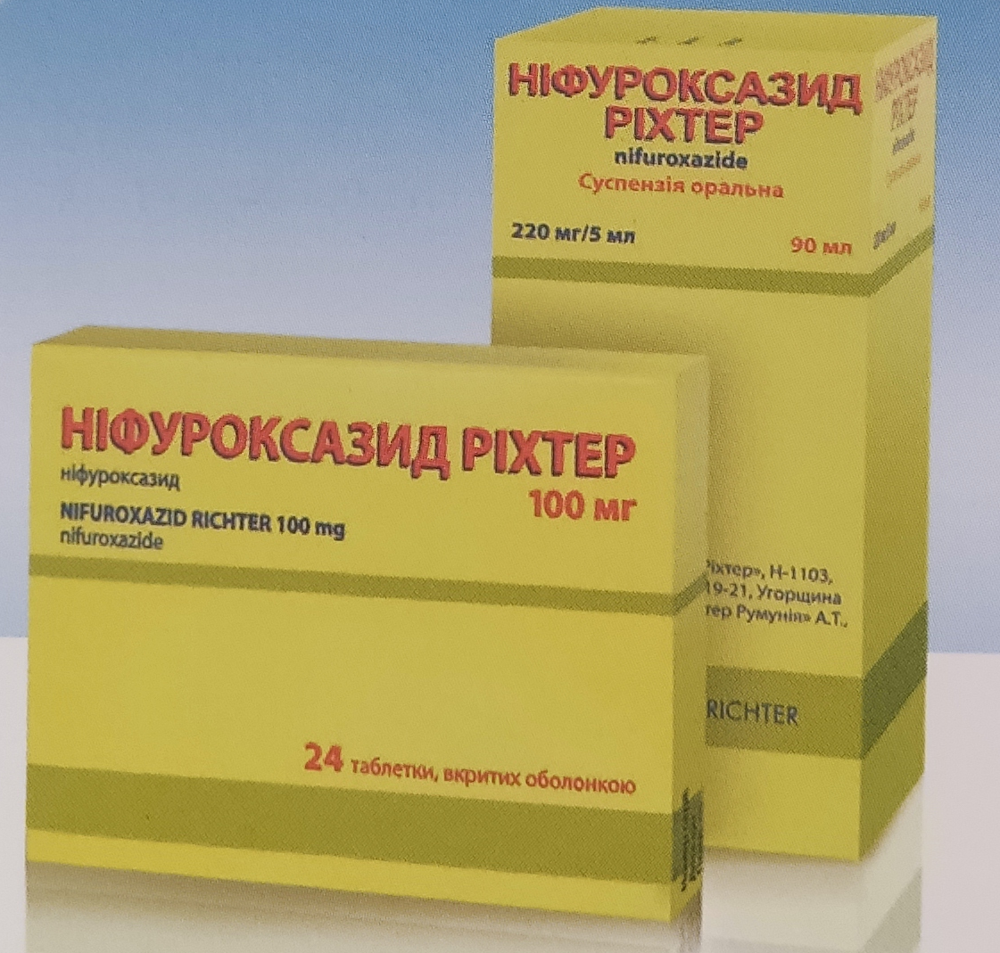

Быстро и безопасно устраняет причину диареи

- Широкий спектр антибактериального действия
- Быстрый эффект - с первых часов приема
- Исключительно местное действие в кишечнике
- Не нарушает равновесия нормальной микрофлоры в кишечнике
Схемы приема препарата
Дети в возрасте от 2-х лет:
Суспензия - по 5 мл суспензии 3 раза в сутки
Дети в возрасте от 6 лет:
Суспензия - по 5 мл суспензии 3 раза в сутки
Таблетки - по 200 мг
(2 таблетки по 100 мг)
3-4 раза в сутки
Дети в возрасте от 15 лет и взрослые
Суспензия - по 5 мл суспензии 4 раза в сутки
Таблетки - по 200 мг
(2 таблетки по 100 мг)
4 раза в сутки
Максимальная суточная доза нифуроксазида - 800 мг.
Продолжительность лечения - не более 7 дней.
Если симптомы не прошли, следует обратится к врачу.